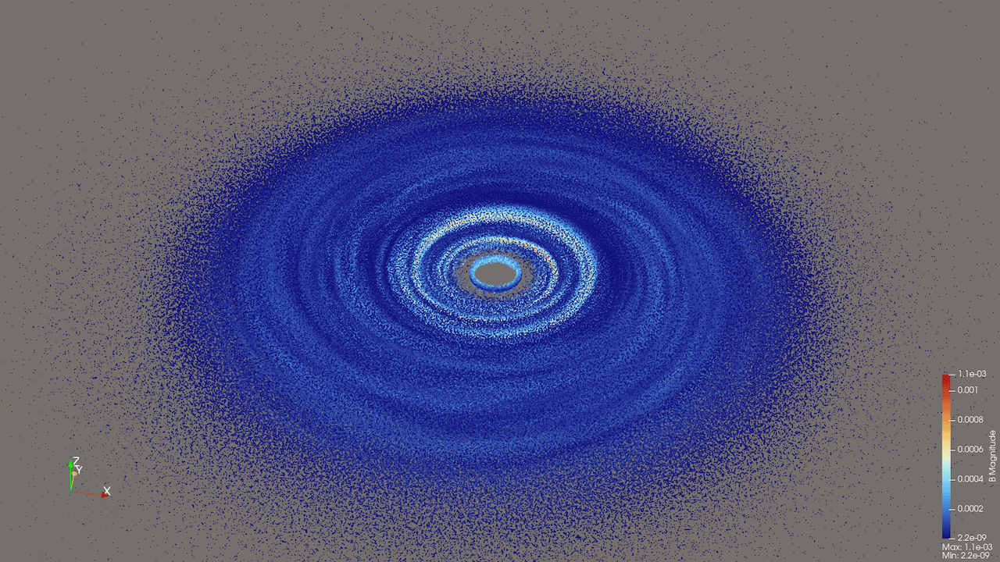
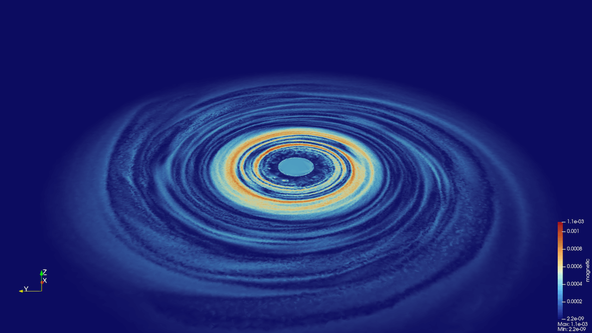
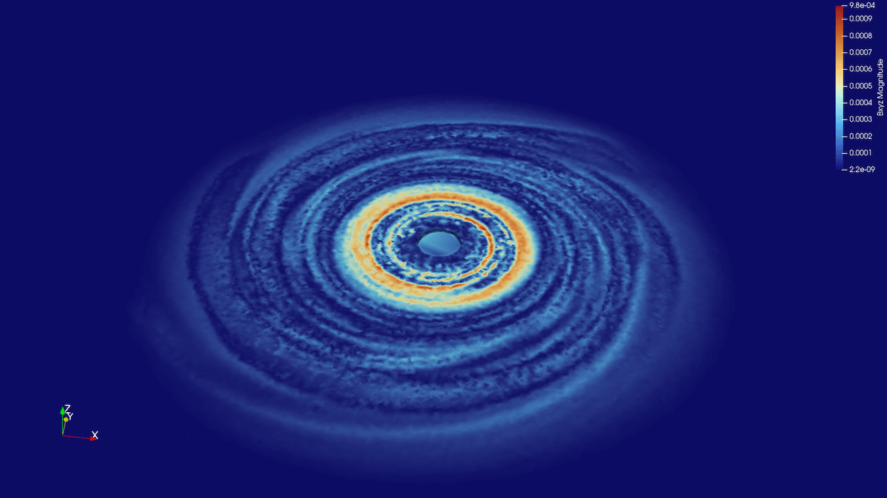
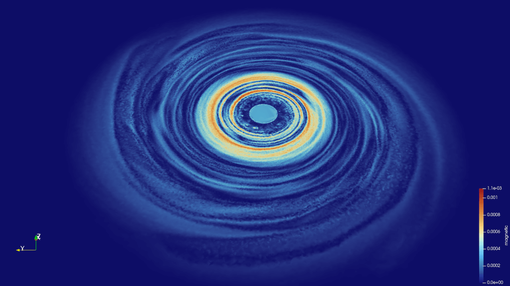
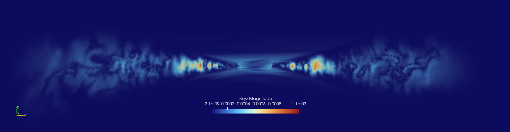

Visualizing SPH particle fields

We want to render SPH particle fields as a continuous distribution.
What did not work
Any interpolation to a static mesh tends to produce results that are highly sensitive to the number of particles and their positioning, and the mesh resolution and orientation, making it fairly difficult to create a mesh to produce the best results. For example, one of the things I tried was generating a cylindrical mesh with a Programmable Source and then applying the Point Dataset Interpolator filter, using the particles as Input and the cylindrical mesh as Source. The results were rather underwhelming.
I imagine one could write an adaptive code that starts with a very coarse Cartesian mesh and recursively subdivides each cell if it contains more than some multiple of 8 particles, storing the resulting mesh as a VTK Unstructured Grid. With a good choice of refinement criteria, this might work reasonably well, but the result would still be inferior to a Delaunay tessellation (below). For a fixed grid, the ideal approach would undoubtedly be to use the SPH kernels to interpolate the variables onto the grid. This still leaves the question, however, of how best to construct the underlying multi-resolution grid.
Delaunay tessellation
Computing on a GPU
Doing Delaunay tessellation on 100 million particles would take a while on a CPU. There are tools to do this on an NVIDIA GPU from C/C++, but I am running this locally on a Macbook, so anything based on CUDA is not an option, unless we run on a cluster. I have not looked into these tools in detail.
ParaView’s builtin Delaunay3D filter
There is a Delaunay3D filter in ParaView, but it takes ~55m on my laptop for one million particles. Since it scales as O(n*log(n)) with the number of particles, it’ll be days for 100 million, just for a single time snapshot, so it is a non-starter.

PyVista’s delaunay_3d
The delaunay_3d function from PyVista which can generate a 3D tetrahedral mesh from a set of scattered points. Here is the code:
import h5py
import pyvista as pv
import numpy as np
# read particles
filename = "mri_00050.h5"
with h5py.File(filename, "r") as f:
coords = f["particles/xyz"][:]
bfield = f["particles/Bxyz"][:]
# create a point cloud and attach magnetic field as point data
pointCloud = pv.PolyData(coords)
pointCloud.point_data["Bxyz"] = bfield
# compute and save the tessellation
delaunayMesh = pointCloud.delaunay_3d(alpha=0.1, progress_bar=True)
delaunayMesh.save("disk.vtu") # save point data onlyHere alpha is the max circumsphere radius for tetrahedra. Setting it to 0 will compute all tetrahedra. This does take a while to run.
Optionally, you can also try saving both point and cell data by replacing the last line with:
mesh = delaunayMesh.point_data_to_cell_data(pass_point_data=True) # interpolate to cells
mesh.save("disk.vtu")but it’s more of personal choice whether to work with point or cell data.
To speed up tessellation, we can include only a subset of points. I experimented with a number of sampling techniques and found that distance-based sampling works best. After defining pointCloud along with its point data, add the following lines:
sampledCloud = pointCloud.clean(
point_merging=True,
tolerance=0.15, # closer points will be merged into a single point
absolute=True
)
print(f"downsampled to {sampledCloud.n_points:,} points")
delaunayMesh = sampledCloud.delaunay_3d(alpha=0, progress_bar=True)
sampledCloud = sampledCloud.sample(pointCloud) # interpolate point_data
delaunayMesh.save("disk.vtu") # save point data onlyThe crucial parameter here is tolerance (smaller values result in more output particles), and with tolerance=0.15 it takes a few seconds to downsample to 220,854 points. Running the Delaunay tessellation on these takes 2m39s on my laptop. Here is the output:

Qhull via command line (and ASCII data)
One good tool to explore is Qhull (source https://github.com/qhull/qhull, website http://www.qhull.org). In 2014 I used it for a galaxy formation rendering, and with 1e6 particles it took 1m10s on the (much slower) laptop I had at the time.
The downside of this approach is that the command-line Qhull tools only read and write ASCII-based data files, so it’ll be a bottleneck for a large number of particles.
On a Mac Qhull can be installed easily with brew install qhull, or it can be compiled from source anywhere with:
git clone https://github.com/qhull/qhull.git
cd qhull/build
cmake -DCMAKE_INSTALL_PREFIX=/installation/path ..
make
make installThe first step is to generate two ASCII-based files: a list of particle coordinates qhullParticles.txt and a list of 3D fields on top of particles qhullFields.txt (in this case, the magnetic field components):
import h5py
import pyvista as pv
import numpy as np
filename = "mri_00050.h5"
with h5py.File(filename, "r") as f:
coords = f["particles/xyz"][:]
bfield = f["particles/Bxyz"][:]
pointCloud = pv.PolyData(coords)
pointCloud.point_data["Bxyz"] = bfield
filename = "qhullParticles.txt"
with open(filename, "w") as file:
file.write(f"{3}\n")
file.write(f"{pointCloud.n_points}\n")
with open(filename, "a") as f:
np.savetxt(f, pointCloud.points, delimiter=" ", fmt="%.8f")
filename="qhullFields.txt"
np.savetxt(filename, bfield, fmt="%.8f")
del pointCloudNext, we create the Delaunay tessellation in bash:
qvoronoi TI qhullParticles.txt TO qhullTetrahedra.txt TF1000000 i Pp # compute Delaunay triangulation facesHere we use TF1000000 to flush the output buffer and print progress update every 1e6 facets, i to write only indices for each tetrahedron, and Pp to hide precision warnings. This took 18.006s on my laptop.
Finally, we assemble the Delaunay tetrahedra from ASCII files qhullParticles.txt (coordinates) and qhullTetrahedra.txt (facet indices) and store these along with the magnetic field components and values (as point data) into a VTU file:
import numpy as np
import pyvista as pv
cellsRaw = np.loadtxt("qhullTetrahedra.txt", dtype=int, skiprows=1)
ncells = cellsRaw.shape[0]
padding = np.full((ncells, 1), 4, dtype=int)
cells = np.hstack((padding, cellsRaw)).ravel()
celltypes = np.full(ncells, pv.CellType.TETRA, dtype=np.uint8)
points = np.loadtxt("qhullParticles.txt", skiprows=2)
fields = np.loadtxt("qhullFields.txt")
bx = fields[:, 0]
by = fields[:, 1]
bz = fields[:, 2]
grid = pv.UnstructuredGrid(cells, celltypes, points)
grid.point_data["bx"] = bx
grid.point_data["by"] = by
grid.point_data["bz"] = bz
grid.save("disk.vtu")

Qhull via Python
If we want to avoid writing and reading large ASCII files, we can compute the Delaunay tessellation using SciPy’s Delaunay function that uses Qhull under the hood:
import h5py
import numpy as np
import pyvista as pv
from scipy.spatial import Delaunay
filename = "mri_00050.h5"
with h5py.File(filename, "r") as f:
coords = f["particles/xyz"][:]
bfield = f["particles/Bxyz"][:]
# 3D Delaunay triangulation using SciPy (Qhull under the hood)
tri = Delaunay(coords, qhull_options="i QJ") # 'i' returns indices; 'QJ' to avoid precision errors; took 49s
numTetrahedra = tri.simplices.shape[0]
padding = np.full((numTetrahedra, 1), 4, dtype=np.int64)
cells = np.hstack([padding, tri.simplices]).ravel()
cellTypes = np.full(numTetrahedra, pv.CellType.TETRA, dtype=np.uint8) # VTK_TETRA = 10
mesh = pv.UnstructuredGrid(cells, cellTypes, coords)
mesh.point_data["Bxyz"] = bfield
mesh.point_data["magnetic"] = np.linalg.norm(bfield, axis=1)
mesh.save("disk.vtu", binary=True)This took 17.885s for 1e6 particles on my laptop.